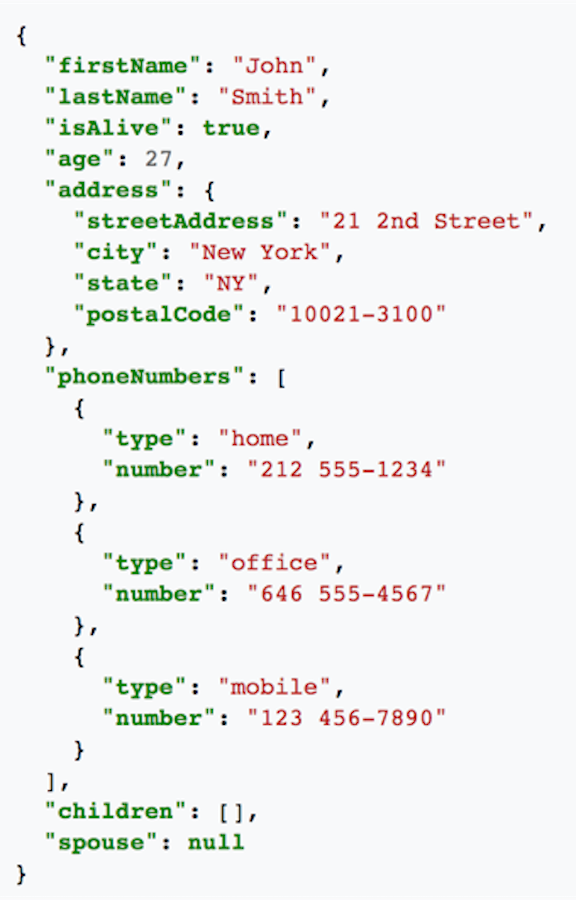
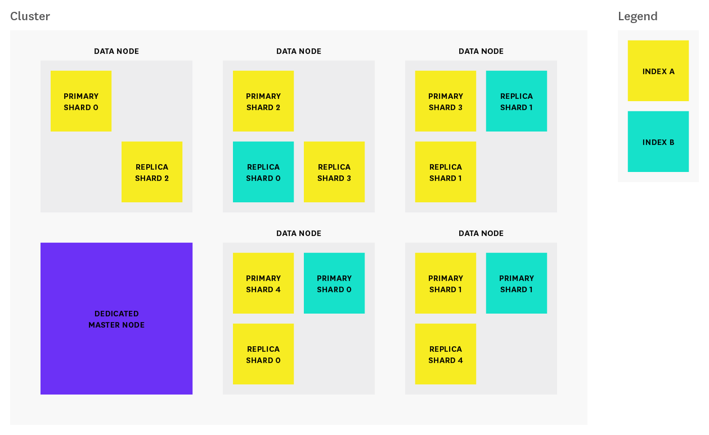

class: center, middle # Elasticsearch ## Introduction --- ## Today * Intro to Elasticsearch -- * CRUD operations with ES -- ## Tomorrow -- * Advanced ES features -- * Integrating ES into a Spring application --- # Use cases * Advanced search * Full-text search * Online stores (e.g. "suggested for you" features) * Indexing very large data sets -- * Analytics - for very large datasets -- * **Not** for primary datastore (data loss/corruption) --- # Relational Databases * Examples: MySQL, PostgreSQL, SQLite -- * Defined schema w/ several tables per database or schema -- * Allows you to set restrictions, run `JOIN` queries, avoid consistency issues -- * Data is "normalized" to reduce redundancy and update issues  --- # Non-Relational (NoSQL) Databases * Examples: MongoDB, CouchDB, Redis, Apache Cassandra -- * Flexible, dynamic table design -- * Fast, can be distributed -- * No defined schema --- # NoSQL Document Data is stored as documents, rather than rows in tables  --- # JSON <div class = "left-column" > <ul> <li>JavaScript Object Notation <li>Data is text <li>Converts to a JS object simply, quickly, no parsing <li>Key:Value pairs make it easy to understand </div> <div class = "right-column">  </div> --- # Lucene Elasticsearch is built on Lucene, a search library written in Java. -- * Stores data in an **index** of documents * Each **document** has **fields** * For now, think of an index as the analog of a database in a RDBMS -- * Inverted indexes - like in back of textbook (faster to search, slower to write) -- * Allows fields to be weighted using the `boost` parameter -- * Lucene Query Syntax --- # Talking To Elasticsearch With Java, we can talk to Elasticsearch via: -- * **Node client** - The node client joins a local cluster as a non data node. In other words, it doesn’t hold any data itself. -- * **Transport client** - Can be used to send requests to a remote cluster. It doesn’t join the cluster itself, but simply forwards requests to a node in the cluster. -- > Both of these clients communicate on port 9300 --- # RESTful API For other scenarios, Elasticsearch provides a RESTful API that communicates using JSON over HTTP -- - Available on port 9200 -- - We'll use the `curl` command to access the API via the command line --- # curl Basics The generic `curl` usages looks like: ```nohighlight $ curl -X<VERB> <OPTIONS> '<URL>' -d '<BODY>' ``` -- <br> The components are: - `VERB` - the HTTP verb to use (`GET`, `POST`, etc); default is `GET` - `OPTIONS` - `curl` options; the most common for us will be `-H 'Content-type: application/json'` (to set the `Content-type` HTTP header) - `URL` - the endpoint to make the request to - `BODY` - the request body (ommitted for `GET` requests); this can be split across lines --- # Let's use Elasticsearch! Install ES via Homebrew using the instructions on the course site. -- Verify that it's running: ``` $ curl 'localhost:9200' ``` --- # The _cat API The endpoint `/_cat` provides useful info about the ES instance. ``` $ curl 'localhost:9200/_cat' =^.^= /_cat/allocation /_cat/shards /_cat/shards/{index} /_cat/master /_cat/nodes /_cat/tasks /_cat/indices /_cat/indices/{index} [content ommitted] ``` -- Add the `v` (for verbose) and `pretty` query parameters to get nicer output --- # Indices * An index is a collection of similar data (books, people) -- * Each piece of data is a document (like one record in SQL, a specific book) -- * Each document is made up of fields, sometimes called properties -- * Each field has a type, just like in SQL -- * The types interact with searches. For instance, a geo distance query can only be run on a `geo_point` field --- # ES versus RDBMS A rough parallel can be drawn: Relational DB ⇒ Databases ⇒ Tables ⇒ Rows ⇒ Columns Elasticsearch ⇒ Indices ⇒ Types ⇒ Documents ⇒ Fields --- # Creating Documents To create a document, `POST` to a URL of the form `/<INDEX>/<TYPE>` with the document as the request body: -- ``` $ curl -XPOST 'localhost:9200/library/books' -H 'Content-type: application/json' -d ' { "title": "Infinite Jest", "author": "David Foster Wallace" }' ``` -- Response: ``` {"_index":"library","_type":"books","_id":"kQrERGMB16M7PyHPwaUV","_version":1,"result":"created","_shards":{"total":2,"successful":1,"failed":0},"_seq_no":1,"_primary_term":1} ``` --- # Shorthand Rather than writing out the full `curl` command, we'll use: ```json POST /library/books?pretty { "title": "Infinite Jest", "author": "David Foster Wallace" } ``` when we mean: ``` $ curl -XPOST 'localhost:9200/library/books?pretty' -H 'Content-type: application/json' -d ' { "title": "Infinite Jest", "author": "David Foster Wallace" }' ``` --- # Retrieving Documents To retrieve a single document, we can ask for: ``` GET /library/books/?pretty<ID> ``` Where `<ID>` is the value of the `_id` field of the document (e.g. `kQrERGMB16M7PyHPwaUV` in the previous example) --- # Searching Conduct a search via the `_search` endpoint for the index: ``` GET /library/_search?pretty { "query": { "match_all": {} } } ``` --- # Search Results ``` { "took" : 1, "timed_out" : false, "_shards" : { "total" : 5, "successful" : 5, "skipped" : 0, "failed" : 0 }, "hits" : { "total" : 2, "max_score" : 1.0, "hits" : [ [results ommitted] ] } } ``` --- # Search Results The response tells us: * `hits` - search results info * `hits.hits` - actual array of search results Note that only 10 results are returned. We can customize the result set using the `from` and `size` parameters. --- # Full-Text Queries **Full text queries** are used to run searches on text fields like: email body, description of item ## Examples `match`, `multi_match`, `common_terms`, `query_string` -- They apply analyzers. (What's an analyzer?!) --- # What's an Analyzer? An analyzer: * Break text content down into word stems (known as tokens or terms) * Those tokens are added to the inverted index * Words like "the" and "and" are skipped -- * Can be customized for each text field in a mapping -- * ES includes an English default --- # Searching By Field ``` GET /library/_search { "query" : { "match" : { "title" : "jest" } } } ``` --- # Aggregations * Aggregations allow you to group and provide statistics about your data -- * ES can return hits and aggregated results in _one_ response -- * Hits and aggregations are listed separately in the response --- # Aggregations With results: ``` GET /bank/_search?pretty { "aggs": { "group_by_state": { "terms": { "field": "state.keyword" } } } } ``` --- # Aggregations Without results: ``` GET /bank/_search?pretty { "size": 0, "aggs": { "group_by_state": { "terms": { "field": "state.keyword" } } } } ``` -- This is similar in SQL: `SELECT state, COUNT(\*) FROM bank GROUP BY state ORDER BY COUNT(\*) DESC` --- # Aggregations * An aggregation is like a function that builds a result set over a group of documents * You can get data like `min`, `max`, `avg`, `sum`, `range` things that are relatively easy to get out of SQL but are tough in a distributed environment --- # Nodes, Clusters & Shards, Oh My! * A **node** is a single server, participating in the ES cluster. -- * A **cluster** is a group of 1+ servers, who index/search together. -- * A **shard** is a bucket of data. This allows one index to be split among multiple nodes in one cluster. A node has one or more shards. -- * ES will manage finding data in the various shards via a **master node** when there are 2+ nodes in your cluster. --- ## Clusters  --- # Fault Tolerance * "health" and failure tolerance -- * Replicas distributed on different nodes in case of failures -- * Master node figures out which node has your data -- * Scale out — searches can be executed on replicas in parallel --- # Let Someone Else Manage It Elasticsearch clusters are often set up on services such as: * AWS Hosted ES Service * Heroku's Bonsai service * Searchly (IBM) --- # ES Alternatives * **Stretch PostgreSQL before you reach for ES** * Apache Solr (also built on Lucene) * Sphinx * RavenDB (MS)